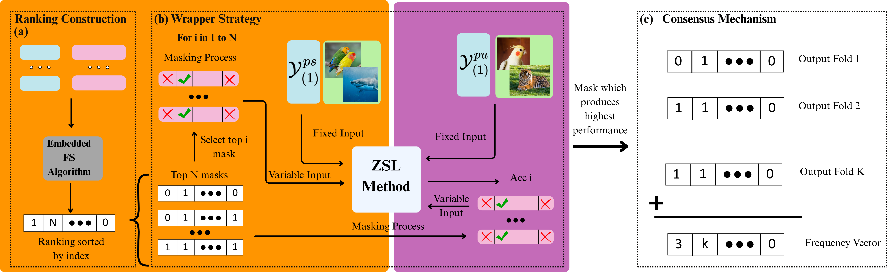
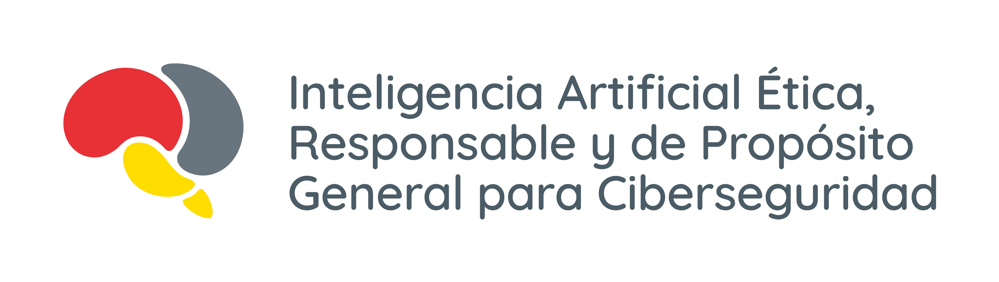

🧑🏫 Human-Annotated Spaces
- Generated from human experts
- Interpretable and transparent
- Significant human effort
Breaking barriers in Artificial Intelligence: Teach once, recognize infinite possibilities. The next frontier of machine learning is here.
Zero-Shot Learning (ZSL) represents a revolution in the field of machine learning. Imagine a system that can recognize and classify objects it has never seen before during its training. This is not science fiction, it's the reality of ZSL.
Unlike traditional learning that requires examples of all possible classes, ZSL uses semantic knowledge to make inferences about completely new classes.
The semantic space is the foundation of Zero-Shot Learning, as it provides the attributes that link seen and unseen classes. These attributes can be constructed in two main ways:
In practice, no type of semantic space is free from noise or irrelevant information, which makes their refinement essential for improving generalization in Zero-Shot Learning.
Preprocessing is crucial in ZSL as the quality of the semantic space directly affects the ability to generalize to unseen classes. Attributes are often noisy, redundant, or weakly correlated with visual differences, undermining performance. By refining it, models can focus on the most informative attributes, improving both performance and interpretability.
Our preprocessing approach operates in an inductive setting (the most challenging), takes all the above into account and focuses on preserving critical semantic relationships while eliminating noise that could confuse the transfer process. It does not overfit, it does not bias towards seen classes, and it actively reduces attribute redundancy and handles the single-instance-per-class challenge.

🔧 Feature Selection Algorithm: Advanced preprocessing pipeline that optimizes feature extraction and dimensionality reduction
Objective: Recreate an inductive ZSL scenario using only seen classes \(\mathcal{Y}^s\), generating pseudo-unseen partitions.
Each of the K folds rotates the seen classes \(\mathcal{Y}^s\) to produce mutually exclusive pseudo-seen \(\mathcal{Y}^{ps}\) and pseudo-unseen \(\mathcal{Y}^{pu}\) subsets.
Split the seen classes into K folds class-stratified
Within each fold, assign buckets to \(\mathcal{Y}^{ps}\) (train) and \(\mathcal{Y}^{pu}\) (validation), ensuring strict disjointness.
Repeat K times so every class appears at least once in \(\mathcal{Y}^{pu}\), measuring inductive performance fold by fold.

These criteria prevent class bias and stabilize cross-fold evaluation.
It enables working under inductive conditions. By simulating unseen classes using the seen ones, it recreates a controlled ZSL environment for training models, fostering generalization and knowledge transfer. Moreover, the systematic and balanced partitioning ensures that every class is treated as unseen exactly once, providing a fair and reliable evaluation.
We have developed an arsenal of complementary techniques that work in synergy to achieve exceptional zero-shot performance. Each technique addresses different aspects of the challenge, creating a robust and versatile system.
Ranking-based Feature Selection refines the semantic attribute space with an embedded ranking plus a cross-validated wrapper over a class-stratified partition. It selects the attribute subset that maximizes pseudo-unseen accuracy, and stabilizes it with an inter-fold consensus threshold.

🏗️ RFS Architecture: Each fold builds an embedded ranking and evaluates top-i masks by training on pseudo-seen and validating on pseudo-unseen; the best mask per fold is retained. A cross-fold consensus with threshold T yields a stable final subset.
The Genetic Algorithm (GA) frames attribute selection as a global combinatorial search.
Each generation of the algorithm refines attribute selection through specific genetic operators:
This evolutionary approach allows us to discover non-intuitive feature combinations that maximize zero-shot performance, overcoming the limitations of traditional selection methods.
If you use this work in your research, you can cite it using the BibTeX format provided below.
@article{SIAS25,
title={Semantic Inductive Attribute Selection for Zero-Shot Learning},
author={Herrera-Aranda, JJ., Gomez-Trenado, G., Triguero, I., Herrera, F.},
journal={Journal Name},
year={2025},
volume={X},
pages={X--X}
}
